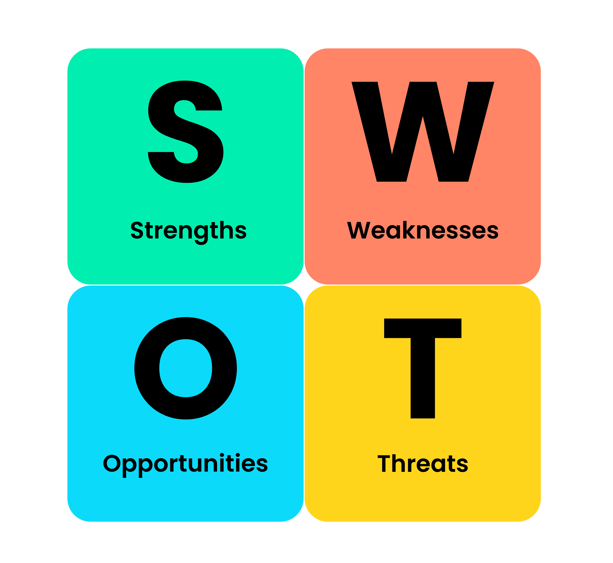

Identify Strengths
List the internal strengths of the organization or project.
SWOT analysis helps in understanding the internal and external factors affecting a decision. SWOT stands for Strengths, Weaknesses, Opportunities, and Threats.

List the internal strengths of the organization or project.
List the internal weaknesses.
List the external opportunities that could benefit the organization.
List the external threats that could harm the organization.
A hospital is transitioning to electronic health records. Classify each factor as a strength, weakness, opportunity, or threat. Select a factor, then select its category.
Select a factor, then choose its category.